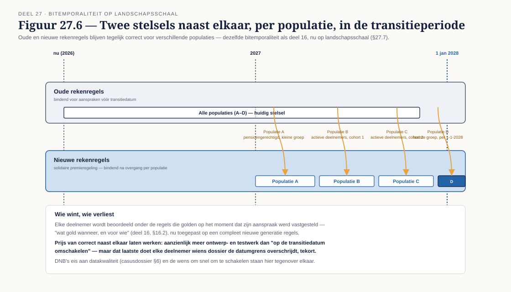

Deel 27 — Beslisautomatisering op schaal
Slidedeck · Ductus-cursus BPMN, CMMN & DMN · niveau 3 · deel 27 van 30 · 24 slides
Slide 1 — Titelslide
Beslisautomatisering op schaal — Deel 27
Slide 2 — Leerdoelen
Na dit deel kun je…
Slide 3 — Van beslisservice naar beslisarchitectuur
Tientallen decisions, één landschap

Slide 4 — Opdracht 1
Granulariteitsanalyse — vijftien decisions
Slide 5 — Waar regels ophouden
Deterministisch (DMN) versus statistisch (ML)

Slide 6 — Opdracht 2
Regel of model — acht besluitsituaties
Slide 7 — Uitlegbaarheid
Deelnemer · klachtbehandelaar · toezichthouder

Slide 8 — Waarom DMN beter uitlegbaar is
Stap voor stap herleidbaar — een getraind model niet
Slide 9 — Raakvlak met AI-regelgeving
Ontwerpimplicaties, geen juridische uiteenzetting
Slide 10 — Opdracht 3
Leg één besluit uit aan drie doelgroepen — de deliverable
Slide 11 — Model risk management
Beslislogica als risico-object

Slide 12 — Een regel die drie jaar fout stond
Niet hypothetisch — zelden geraakte regels zijn het kwetsbaarst
Slide 13 — Opdracht 4
Model risk-raamwerk — de kerndeliverable
Slide 14 — Vier uitrolstrategieën
Shadow run · parallel · gefaseerd · terugval

Slide 15 — Opdracht 5
Kies de uitrolstrategie — verdedig tegen een directeur met haast
Slide 16 — "Waarom niet gewoon in één keer?"
Wat er misgaat bij een big bang voor 380.000 deelnemers
Slide 17 — Twee stelsels tegelijk
Oude en nieuwe rekenregels, verschillende populaties

Slide 18 — De spreidingstermijn
Geen omschakelmoment, een omschakelperiode
Slide 19 — Opdracht 6
Ontwerp de beslisarchitectuur voor twee stelsels
Slide 20 — Wie wint, wie verliest
Correctheid voor elke populatie versus snelheid van omschakelen
Slide 21 — Opdracht 7
Stellingen
Slide 22 — Terugblik
Van vijftien decisions tot twee stelsels naast elkaar
Slide 23 — Vooruitblik
Deel 28 — Adaptive case management en kenniswerk
Slide 24 — Vragen
Vragen over deel 27?